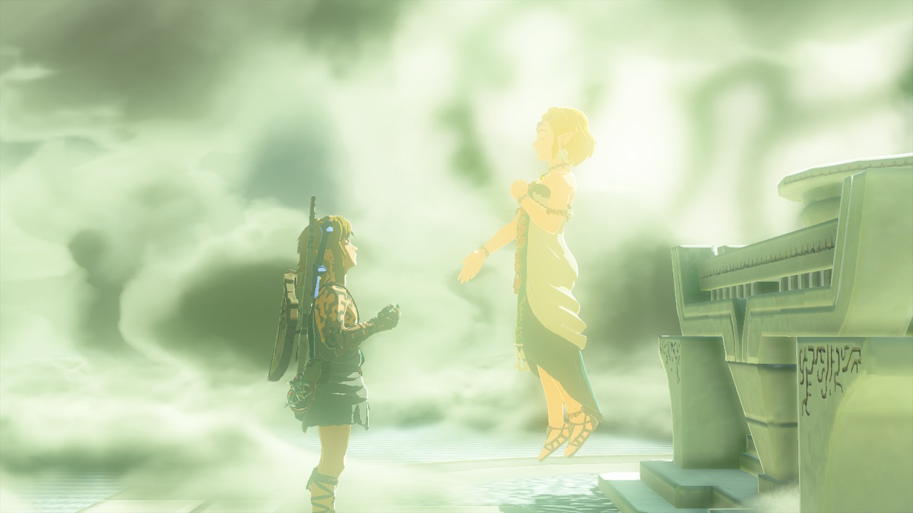
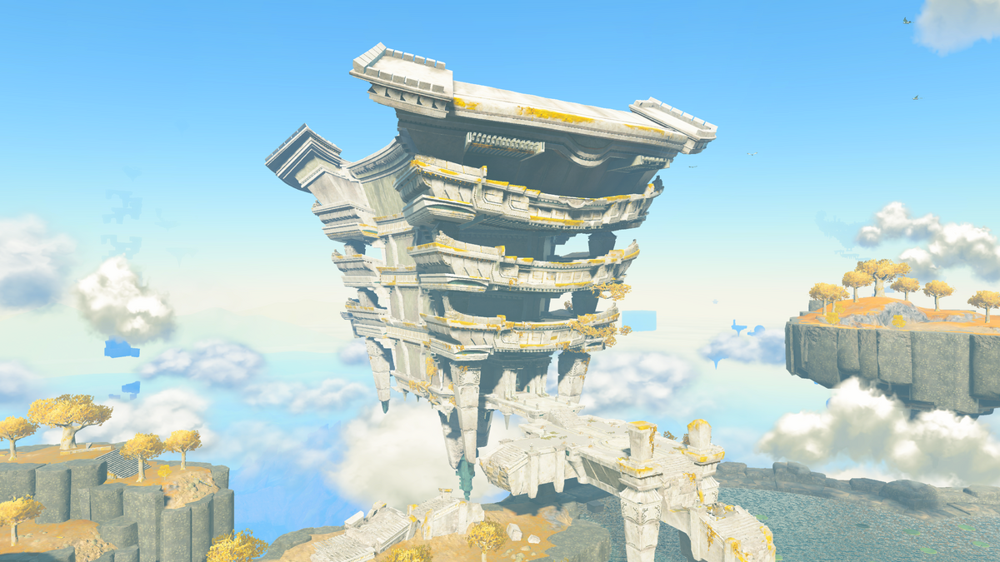
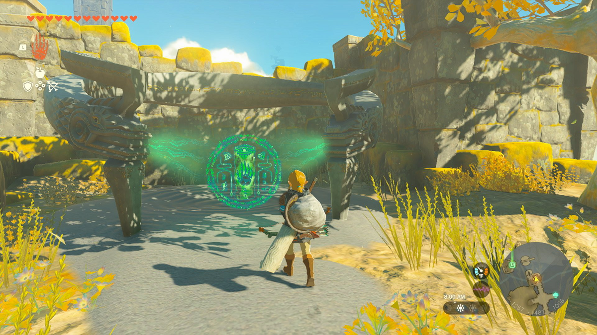

先说结论：结局之后还有真结局
打完黑龙就是结局：林克俯冲接住坠落的塞尔达，劳鲁与索尼娅的力量让她变回人身。想看真结局，关键在打最终战之前——主线任务全部做完（四座神殿、第五位贤者、12 滴龙之泪、丢失的勇者之剑），字幕结束后会多一段约 5–6 分钟的过场。通关后存档带一颗 ★，读档回到决战前，继续补收集。
接取与奖励
| 项目 | 内容 |
|---|---|
| 接取 | 完成「讨伐加侬多夫」后自动进入结局 |
| 前置 | 讨伐加侬多夫 |
| 奖励 | 真正的结局 |
| 全收集目标 | 152 座神庙、120 个破魔树根、1000 颗克洛格种子、12 颗龙之泪 |
| 后续 | 自由探索，无第 24 项主线 |
总览
| 阶段 | 内容 |
|---|---|
| 结局动画 | 击败黑龙 → 接住塞尔达 → 变回人身 |
| 真结局 | 打最终战前清完主线 → 字幕后多一段过场 |
| 通关后 | 存档带 ★，读档回到决战前 |
| 全收集 | 152 神庙 / 120 树根 / 1000 种子 / 12 龙之泪 |
分步攻略
1看结局动画
刺碎黑龙额头秘石后：林克俯冲接住坠落的塞尔达，劳鲁与索尼娅的灵魂出现，借林克的手臂把光与时之力传给她，塞尔达变回人身，林克的手臂也恢复了。随后是结局对话与字幕。
2真结局：打最终战前先清完主线
字幕后有没有多一段过场，取决于打最终战之前主线清没清完：四座神殿、第五位贤者、12 滴龙之泪、丢失的勇者之剑，一个都别落下。全部做完再去打加侬多夫，字幕结束后会多一段约 5–6 分钟的过场：众人在初始空岛的时之神殿重聚，米涅露的灵魂现身，贤者们立誓守护海拉鲁，米涅露告别离去。

3没看到真结局也不用重开
第一次通关没看到这段过场，不用重开新档：补完剩下的主线任务，再打一次最终战就能看到。

4通关后：读档回到决战前
结局看完，存档会带上一颗 ★。读这个存档，回到决战前继续探索，进度、装备、收集都在，不是进度丢失，这是正常设计。
5全收集目标
主线 23 项全部完成，之后全是自由探索，别再找第 24 项主线。按需要补齐：152 座神庙、120 个破魔树根、1000 颗克洛格种子、12 颗龙之泪。

关键信息
| 项目 | 内容 |
|---|---|
| 任务类型 | 主线任务，第 23 篇（最后一篇） |
| 前置任务 | 讨伐加侬多夫 |
| 真结局条件 | 打最终战前完成其余全部主线任务（12 滴龙之泪、大师之剑、四座神殿、第五位贤者） |
| 真结局过场 | 约 5–6 分钟，字幕结束后播放 |
| 通关存档 | 带 ★，读档回到决战前 |
| 全收集 | 152 座神庙、120 个破魔树根、1000 颗克洛格种子、12 颗龙之泪 |
容易翻车的地方
- 主线没清完就打最终战：字幕后没有多那段过场，想看就得补完主线再打一次。
- 以为通关后游戏结束：没有传统通关后流程，读带 ★ 的存档回到决战前继续玩。
- 读档发现回到决战前，以为进度丢了：这是正常设计，装备和收集都在。
- 到处找第 24 项主线：主线一共 23 项，做完就是自由探索。
- 只集齐龙之泪就去打：光看记忆不够，四座神殿、第五位贤者、大师之剑也要做完。
一句话总结
黑龙打完就是结局，塞尔达变回人身；打最终战前把主线全部清完，字幕后多一段真结局过场；通关后读带 ★ 的存档回到决战前，152 神庙、120 树根、1000 种子、12 滴泪慢慢补——主线 23 项到此全部完成。